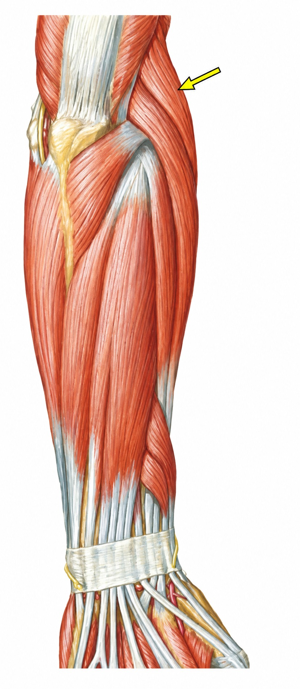

Lemos a provaO que o TEOT e o TARO já cobraram, assunto por assunto.
DesmontamosQual detalhe a banca quer ver e onde ela costuma pegar.
Montamos de novoUma questão autoral, inédita, no mesmo padrão da prova.
Chegou a parte de anatomia. Teste no próximo story.

OrtoQuestões Simulados · anatomiaSob o músculo indicado, o nervo que segue distalmente na região lateral do antebraço é o
Pensou na sua? A resposta está no próximo story.
A seta aponta o braquiorradial. Sob ele desce o ramo superficial do radial, sensitivo, rumo ao punho. O ramo profundo faz outro caminho: atravessa o supinador e sai como interósseo posterior.
Anatomia nova no treino, no padrão da prova.
Treine grátis em ortoquestoes.com.brE o ramo profundo? Siga a rota no feed de hoje.